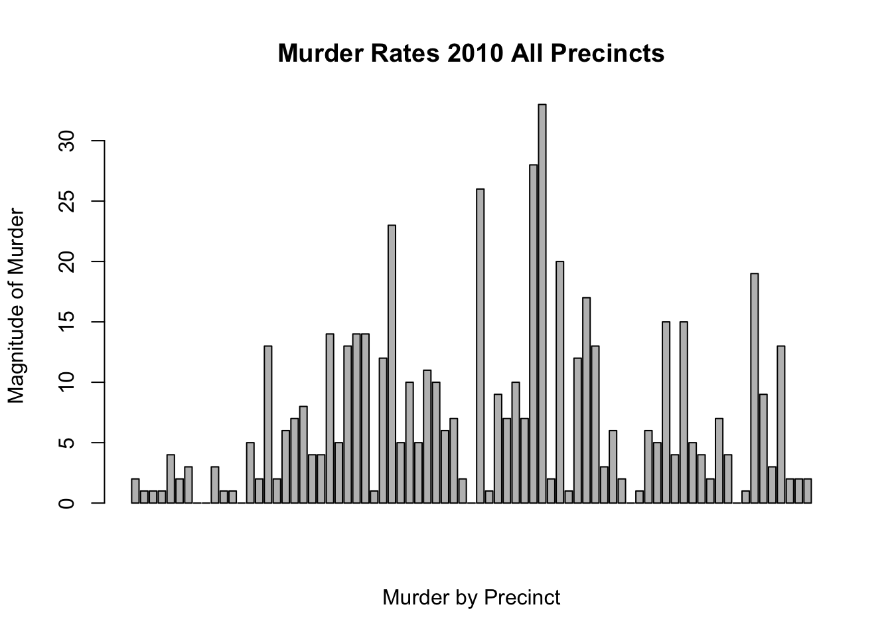
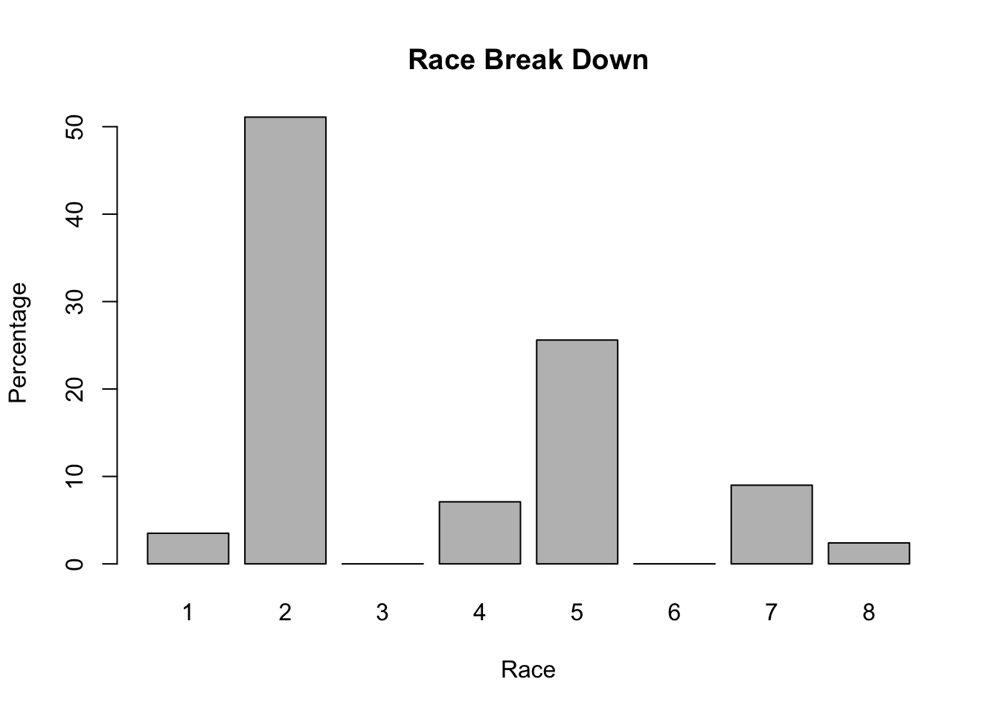
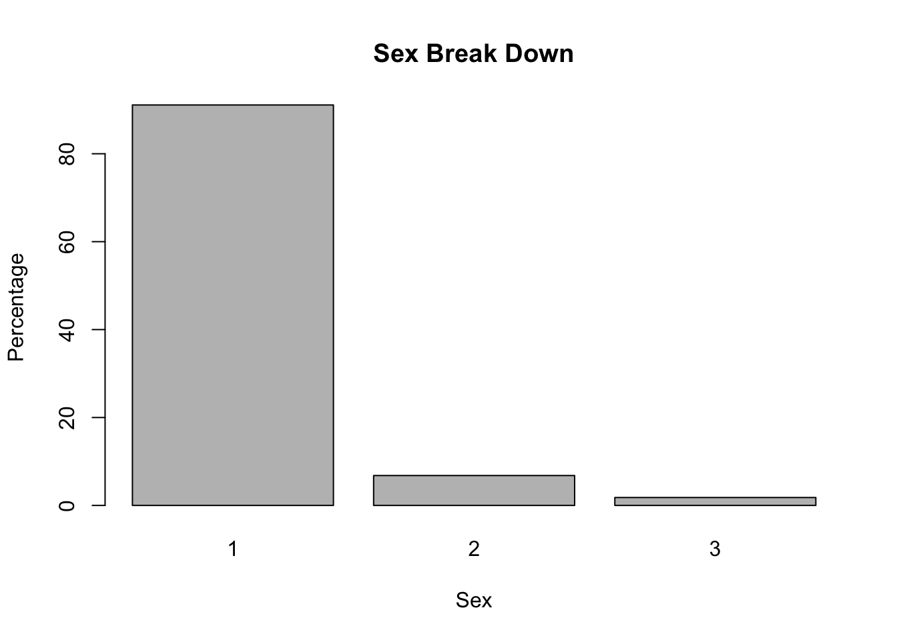
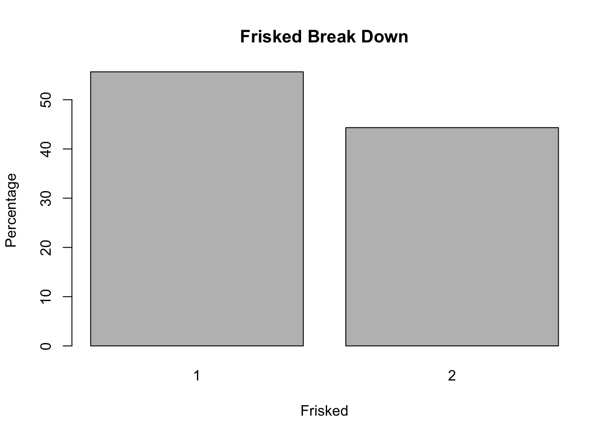

The source of the following data analysis is from New York City crime dataset available online. The data used specifically is Murder rates by precinct in the year of 2010. The data for all other vairables analyzed is for the year 2011. The data below is broken down by variable for the overall year. The variables chosen to compare to the murder rates were chosen selectively
Variable analyzed from the year 2010,
Overall Murder rates
barplot(MurderRates2010ALLPCT, main = "Murder Rates 2010 All Precincts", xlab = "Murder by Precinct", ylab = "Magnitude of Murder")
Variables analyzed from the year 2011 are as follows,
Below is the r code for each variable tested in correlation with murder rates.
Overall Age Data
summary(age)## Min. 1st Qu. Median Mean 3rd Qu. Max.
## 0.0 19.0 24.0 29.4 34.0 999.0Overall Race Breakdown
| Race | Percentage |
|---|---|
| Asian/Pacific Islander | 3.5% |
| Black | 51.1% |
| American Indian/Alaskan Native | > 1% |
| P- Black-hispanic | 7.1% |
| Q- White-hispanic | 25.6% |
| X (Unknown) | > 1% |
| White | 9% |
| Z(Other) | 2.4% |
barplot(RacePlot, main = "Race Break Down", xlab = "Race", ylab = "Percentage")
Overall Sex Breakdown
| Sex | Percentage |
|---|---|
| Male | 91.1% |
| Female | 6.8% |
| Z(Other) | 1.8% |
barplot(SexPlot, main = "Sex Break Down", xlab = "Sex", ylab = "Percentage")
Overall Frisked Breakdown
| Frisked | Percentage |
|---|---|
| Yes | 55.7% |
| No | 44.3% |
barplot(FriskedPlot, main = "Frisked Break Down", xlab = "Frisked", ylab = "Percentage")
Variables Race, Sex, and Frisked by pct,
Race by Precinct
Black and White races were analyzed for the purposes of this data description alongside the hypothesis,
table(race,pct)## pct
## race 1 5 6 7 9 10 13 14 17 18 19
## A 193 413 62 202 163 83 178 457 97 158 229
## B 2044 1218 1609 1454 1799 1650 2210 5724 801 1774 1766
## I 13 5 5 10 9 4 24 37 14 30 30
## P 137 235 90 423 462 161 245 430 110 187 298
## Q 530 638 465 1378 1460 578 1180 1880 464 742 1461
## U 32 53 17 60 98 67 73 112 21 24 30
## W 663 432 595 571 1237 534 1255 1797 440 667 1180
## Z 14 124 111 79 139 12 87 228 113 51 256
## pct
## race 20 22 23 24 25 26 28 30 32 33 34
## A 271 30 163 80 61 36 42 83 65 41 42
## B 2212 519 10357 2503 6658 3369 7163 3131 11268 1594 1054
## I 26 0 38 12 6 21 9 49 19 33 25
## P 319 168 1422 538 600 381 329 1476 350 1904 3818
## Q 1159 366 4655 1194 1913 899 869 2203 819 3003 5020
## U 9 6 77 22 37 10 31 20 20 154 48
## W 1169 316 398 522 301 217 219 206 181 262 390
## Z 72 11 388 47 350 58 76 382 137 50 1151
## pct
## race 40 41 42 43 44 45 46 47 48 49 50
## A 63 54 68 205 66 88 90 104 64 140 29
## B 9200 4617 7373 7216 8341 1895 5995 8309 2314 4004 693
## I 15 36 22 75 25 23 23 18 18 33 9
## P 1862 1430 1117 2053 2358 587 2357 441 579 576 377
## Q 6039 4272 3199 6566 5072 1556 5105 1526 1683 2449 1268
## U 193 35 55 17 251 76 21 115 57 195 13
## W 199 206 94 280 216 909 92 221 220 997 288
## Z 119 679 486 869 574 228 35 202 330 101 6
## pct
## race 52 60 61 62 63 66 67 68 69 70 71
## A 153 285 215 375 57 481 77 234 167 356 38
## B 4256 4991 1844 346 3621 447 11728 216 5486 8737 5486
## I 43 33 13 48 7 44 20 13 4 68 7
## P 2575 411 166 172 63 435 127 81 103 263 96
## Q 5593 2039 1055 1232 253 1452 324 781 217 1756 237
## U 100 13 71 41 20 197 30 3 3 35 13
## W 368 2168 3199 2158 548 748 145 1557 127 597 129
## Z 560 12 57 13 16 23 642 5 10 492 8
## pct
## race 72 73 75 76 77 78 79 81 83 84 88
## A 244 245 445 129 163 92 134 87 188 252 98
## B 567 21452 21742 2002 9768 1356 11217 11668 4734 3242 5890
## I 27 18 160 16 16 16 27 18 58 27 63
## P 622 534 1468 282 222 195 371 255 1302 192 168
## Q 4970 1762 5640 1230 747 1111 1734 862 7162 759 798
## U 40 161 61 48 26 55 37 483 60 41 22
## W 465 245 468 886 334 604 635 211 723 615 449
## Z 42 750 1116 66 129 126 340 67 794 86 246
## pct
## race 90 94 100 101 102 103 104 105 106 107 108
## A 240 51 103 56 2058 928 221 506 3000 767 986
## B 6303 499 3203 9983 1818 12093 703 7304 2754 2453 663
## I 65 10 20 21 129 232 23 87 73 115 19
## P 2159 109 165 204 758 515 594 189 328 308 423
## Q 6881 569 641 838 3540 2534 3371 774 1367 1042 2794
## U 120 52 5 203 59 252 51 38 16 59 71
## W 1731 718 972 149 715 378 1845 481 736 628 901
## Z 67 15 3 122 409 220 66 412 369 211 3
## pct
## race 109 110 111 112 113 114 115 120 122 123
## A 2909 548 819 154 343 599 601 184 195 29
## B 2061 886 896 726 10503 3587 1539 8608 1439 92
## I 109 71 57 37 64 95 92 62 49 5
## P 656 697 184 163 196 416 1606 580 239 26
## Q 5397 8047 1073 935 794 3241 12979 3532 1452 176
## U 92 88 68 26 107 360 120 297 18 29
## W 1632 416 1498 1229 230 1795 663 3090 5680 1665
## Z 8 42 85 137 122 250 556 137 463 5Sex by Precinct
table(sex,pct)## pct
## sex 1 5 6 7 9 10 13 14 17 18 19
## F 267 310 235 207 459 239 476 1054 200 370 493
## M 3353 2728 2622 3915 4760 2837 4721 9440 1781 3240 4560
## Z 6 80 97 55 148 13 55 171 79 23 197
## pct
## sex 20 22 23 24 25 26 28 30 32 33 34
## F 636 135 1257 510 759 424 776 412 1150 378 566
## M 4543 1279 16007 4393 8849 4543 7913 6819 11643 6613 10746
## Z 58 2 234 15 318 24 49 319 66 50 236
## pct
## sex 40 41 42 43 44 45 46 47 48 49 50
## F 1315 880 780 1271 879 481 757 763 423 471 115
## M 16338 9950 11201 15261 15407 4713 12945 9998 4528 7993 2558
## Z 37 499 433 749 617 168 16 175 314 31 10
## pct
## sex 52 60 61 62 63 66 67 68 69 70 71
## F 732 680 349 258 222 270 870 134 390 895 364
## M 12514 9256 6242 4120 4353 3536 11688 2754 5720 10997 5641
## Z 402 16 29 7 10 21 535 2 7 412 9
## pct
## sex 72 73 75 76 77 78 79 81 83 84 88
## F 209 1932 2006 492 787 255 1176 1035 883 607 623
## M 6739 22603 28157 4161 10549 3219 13070 12560 13647 4539 6898
## Z 29 632 937 6 69 81 249 56 491 68 213
## pct
## sex 90 94 100 101 102 103 104 105 106 107 108
## F 874 164 344 318 586 1175 451 513 382 322 333
## M 16638 1857 4768 11161 8620 15730 6372 9207 8071 5057 5525
## Z 54 2 0 97 280 247 51 71 190 204 2
## pct
## sex 109 110 111 112 113 114 115 120 122 123
## F 585 403 335 177 675 568 608 2071 1106 177
## M 12270 10371 4317 3123 11607 9326 17133 14314 8355 1848
## Z 9 21 28 107 77 449 415 105 74 2Frisked by Precinct
table(frisked,pct)## pct
## frisked 1 5 6 7 9 10 13 14 17 18 19
## N 2061 1761 1560 1711 2545 1557 3202 7052 1494 2626 3461
## Y 1565 1357 1394 2466 2822 1532 2050 3613 566 1007 1789
## pct
## frisked 20 22 23 24 25 26 28 30 32 33 34
## N 3640 972 6427 2970 3604 2124 4554 3563 3794 3149 5876
## Y 1597 444 11071 1948 6322 2867 4184 3987 9065 3892 5672
## pct
## frisked 40 41 42 43 44 45 46 47 48 49 50
## N 6576 4435 3652 7532 3766 3186 2691 4296 1713 3894 1333
## Y 11114 6894 8762 9749 13137 2176 11027 6640 3552 4601 1350
## pct
## frisked 52 60 61 62 63 66 67 68 69 70 71
## N 4503 4344 2823 2775 1525 2247 6662 1592 3166 5773 2926
## Y 9145 5608 3797 1610 3060 1580 6431 1298 2951 6531 3088
## pct
## frisked 72 73 75 76 77 78 79 81 83 84 88
## N 3774 11829 14298 2776 5201 2120 7325 5474 6169 3584 3745
## Y 3203 13338 16802 1883 6204 1435 7170 8177 8852 1630 3989
## pct
## frisked 90 94 100 101 102 103 104 105 106 107 108
## N 10645 973 2445 2686 4295 7988 2127 4349 4847 2671 2639
## Y 6921 1050 2667 8890 5191 9164 4747 5442 3796 2912 3221
## pct
## frisked 109 110 111 112 113 114 115 120 122 123
## N 4267 2941 2023 1396 5997 3929 5098 8541 5519 1236
## Y 8597 7854 2657 2011 6362 6414 13058 7949 4016 791The data posted below is each varibale by New York City Police Precinct.
*KEY: